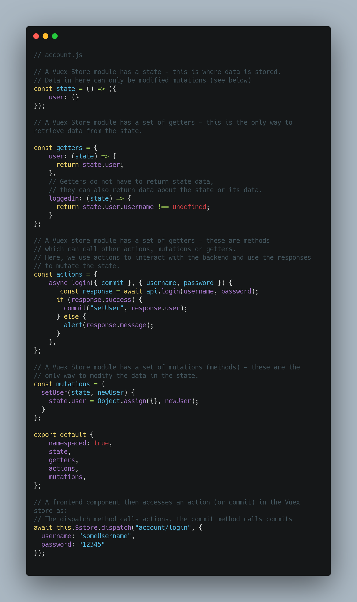
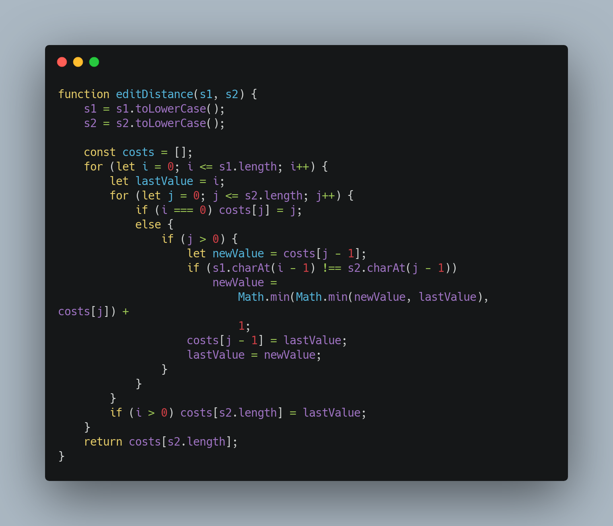

Main Technologies
As shown in our research, our main technologies are Vue.js (web app in JavaScript), Android
Studio(Android App in Java), IBM Cloud DB2 (Cloud database),
Java (for the backend and services API) and Google Firebase(media storage)
All Java components will be managed using the Maven build tool.
We will also be using the Java SpringBoot dependency which allows us to create simple RESTful APIs
with little
overhead code.
Admin Web App
The companion web app to the IBM FISE Concierge allowing friends of (elderly) users to set up
accounts and manage the details of all members in their circle. Admins have the ability to add and
remove services from member accounts and view service usage history for each member.
Responsive Design
The web app is designed to be usable on any device with a browser (with JavaScript enabled) and as such
required care into ensuring it worked on any (modern) browser on any screen size and orientation. To
facilitate this, the mobile-first design pattern was implemented using CSS – the styles for each
component (button, header, input etc.) are designed to be usable on mobile devices. Once the appearance
was up to standard, extra cases were added (using CSS media queries) to make use of the space afforded
by larger devices.
Click to enlarge
Several implementation iterations were carried out, testing the appearance on multiple browsers, screen
sizes and orientations. Screenshots are shown below:
Click to enlarge


Accessibility
The web app must be user-friendly to all types of users, including those less able. To ensure this was
true, standard HTML semantics were followed (e.g., using the <button> tag for buttons instead of div
elements; splitting pages into section elements and ensuring headings followed the h1, h2, h3
etc.
pattern in order).
This approach makes the website more screen reader friendly so more users can use the web app. Naturally,
we are not experts on this, and our implementation is likely far from perfect, but accessibility was
always kept in mind during the implementation phase.
Data Fetching
To communicate with the backend, the Axios Node module was
used to make RESTful API calls to the
backend;
this was then wrapped in a set of methods to act as a further abstraction between the backend and the
frontend. Axios is a popular and mature library but should we want to switch to another data-fetching
library, only the content of the wrapper methods needs to be changed- the frontend can remain the
same.
Given Vue’s reactive nature, the data provided on the website can be populated when it is ready (i.e.,
returned by the backend). To facilitate this, JavaScript’s Promise API was used with asynchronous
data-fetching methods.
Naturally, API calls take some non-zero time to make and receive a response from – the website should not
be frozen while waiting for this data otherwise it would completely hamper the user experience; this
problem would worsen for users on slower internet connections.
In essence, when performing an API call with the
axios.request()
method, the object returned is a Promise. A
Promise
is an object representing the eventual completion or failure of an asynchronous operation (Promise -
JavaScript | MDN, 2021). The backend response was wrapped in a Promise (by the axios library) which
resolves
into the JSON response when the backend responds; this happens automatically, handled by the Promise
API.
As a result, we could make API calls and then set the required data when a response is received; once
received, Vue’s reactive nature will then repaint the DOM to display this data.
Naturally, some methods require the data to be populated before they can run. To facilitate this, the
await keyword can be used in asynchronous methods to pause execution in that method until the Promise
resolves. However, it is important to note that this does not block the callee method as asynchronous
methods return a Promise, so the callee is free to continue executing if needed.
In short, Vue’s reactive nature, coupled with JavaScript’s built-in asynchronous features, allows us to
maximise the performance of the web app with little overhead code without idling, waiting for a backend
response.
Click to enlarge
Vuex Store
Naturally, some data needs to persist between sessions. The Vue store (provided by the Vuex
library) is a mechanism allowing for persistent data storage.
Vuex is a state management pattern + library for Vue.js applications. It serves as a centralised store
for all the components in an application, with rules ensuring that the state can only be mutated in a
predictable fashion (What is Vuex? | Vuex, 2021).
In the web app, Vuex is used to store the username of the logged-in user. This prevents the user from
having to login whenever they switch pages and also allows them to remain logged in even after exiting
the web app. The username is cleared from the store when the user manually logs out.
Additionally, the store was used as an interface between the frontend components and the set of wrapper
methods used to make axios API calls to the backend. Vuex is an extension of Vue.js, so the interaction
between the two is natural and intuitive. Instead of the frontend directly making API calls, it
interacts with the store; if the endpoints, or structure of messages changes, the frontend can remain
the same – only the store needs to be modified.
To reduce bandwidth, images were also cached in the Vuex store meaning they do not need to be continually
fetched from elsewhere whenever the admin visits the website. It is important to note that if more
images were to be added, the Vuex store would need to be cleared (which can be done
programmatically).
Click to enlarge

Media Storage
The web app uses profile pictures to differentiate between app users assigned to an admin (in case they
have the same name). Icons for each service are used to make the user experience more aesthetically
pleasing.
However, we decided we would not store these images in the cloud database as this would eat into our
already limited IBM cloud storage quota (as we are on the free plan) which negatively affects the
scalability of our solution – we would have to pay to increase our storage quota. Additionally, we would
need to encode the images as binary text and then insert it; this would make database maintenance very
difficult (e.g., we would not know if we’ve inserted the correct image as we cannot see it in the cloud
database console).
Instead, images were stored in a Google
Firebase bucket and
accessed using Firebase’s JavaScript
API. Accessing these images returns a download link which we can directly insert into an image tag in
HTML. Images can then be easily modified as well as essentially providing us with more storage to work
with for free.
In the cloud database, these images are referenced by their filename which the web app uses when
searching the Firebase bucket.
Note that all images were converted into the .webp file format to
reduce file sizes (and hence, bandwidth) with
no loss in image quality. Images were also scaled down so their size was the maximum size the image
would ever be when displayed on the website.
Click to enlarge
Click to enlarge
See the appendix for image attributions.
Marketplace
The marketplace allows users to search for services by either their name, or description.
Naturally, users may make mistakes with typing meaning a strict equality string comparison between the
search term and each service name is inappropriate./p>
Instead, the similarity between the two was compared and returned a match if this similarity was above
75%.
To calculate the string similarity, an edit distance algorithm was used:
Click to enlarge
Click to enlarge

Android App
See implementation details for the app below.
Main Technologies
The app was programmed in Java using the Android Studio IDE and its built in features such as the
Profiler.
Dependencies & Tools
We used several external libraries beyond the standard Java and Android libraries to help us develop and
test our app. See the different sections below.
Android APIs
We made extensive use of the built in Android APIs for features such as searching contacts, making calls
and providing notifications.
This includes using the built-in Android speech recognition (which can be used offline for Android API Level 16 and above) and speech synthesis for our app. We used this as it was the simplest option
given our app was native to Android. This provides the added benefit that as
the Android speech
recognition and speech synthesis improves, our app will automatically benefit, rather than having to maintatin and improve speech recognition
and synthesis ourselves.
Generall speaking, using existing Android APIs saved us time from having to implement all the low level code ourselves. It also
resulted in better code quality and ensured compatibility with different Android SDKs [see Compatibility Testing
for more details]. The Android APIs are also well tested which is an important metric for quality assurance.
Built in SQLite 3 DB (For Alarms, Reminders and User Details)
We utilised the built in SQLite database that comes with Android for our Alarms and Reminders. We also
used this to store a
user's details after they connected to their admin.
We utilised the localised storage as it is fast, convenient, reliable and raises no privacy concerns. It can now also act as a
framework for developers who may wish to utilise the localised storage for their own features, some of which may be privacy sensitive.
Built in widgets
We utilised several built in widgets such as DatePicker, NumberPicker and more.
These were used in some of our features. For example Alarms required widgets for choosing the date and time.
and Timers required the NumberPicker widget. Reasons for using the built in widget are the same as for using Android
APIs (see above).
However, we accept a possible disadvantage of doing this which is that customisation of built in widgets is limited.
Though we acknowledge that our app may benefit from custom widgets design wise, we did not have enough time to code and test these
(this may be an idea future teams can pick up on).
Java
Java 13
We used Java 13 to program our app as it was the most up to date Java version and provided many standard,
well tested, well maintained libraries which we could use.
Data Structures
We used many data structures in our app. The most notable one was HashMaps.
This was used to store key
value pairs after parsing the JSON response
from Ask Bob which would then be used by the AskBobResponseController to decide which method in
MainController to call.
We used HashMaps for their efficiency,
as they provide O(1) time complexity for searching. This would ensure
that we could respond to user requests more
quickly. They also come with a variety of built in methods that were very useful, such as contains(),
which was needed at several points to quickly
check what sort of a request the user had made (Service API, Lookup etc). It
also prevented the app from crashing
due to NullPointerExceptions as we could check if the hashmap contained a particular key or not before
asking for it through the get() method. Note that
O(1) time complexity came into use here too.
Aside from this, we used other data structures such as ArrayLists and Strings to pass data around our
app appropriately. These data structures, along with HashMaps,
came with a nice interface and Stream API methods which allowed us to easily peform required operations on these
data structures without having to implement them ourselves. They were also easier to work with than raw
data structures such as arrays due to their interface.
We also used booleans, ints and other primitive data types. We used these when there was no need to use
more complex data structures which made our
app faster and less resource intensive.
Other Java Libraries
We used other standard Java libraries such as HttpUrlConnection (for connecting to the backend and Ask
Bob servers) throughout the app. These standard libraries are also what allowed us to connect our app to the backend
automatically.
Given that our backend server runs locally rather than on the cloud, the IP address would change for everyone
who ran the server. This created an issue as to how we could program our app to connect to the backend server on any network for everyone
as the IP would change every time. We came up with a solution where our backend server broadcasts its IP address and the app picks it up
and stores this IP. This meant our app can dynamically connect to the local backend server on any network for everyone, without any input from the user.
Other Major Libraries
Espresso
This library was used to write Instrumentation tests. Please refer to the testing section for further
details.
Robolectric
This library was used to write unit/integration tests. Please refer to the testing section for further
details.
Monkey
This library was used for stress testing. Please refer to the testing section for further details.
AndroidJUnit4Runner
This library was used to run Instrumentation tests. Please refer to the testing section for further
details.
org.json
This library was used to parse the JSON response from the Ask Bob Server.
Backend and Ask Bob Servers
The app makes use of the Ask Bob server to send user requests and receive a JSON response which the app
can use to decide which action to take.
We also make use of our backend server
to connect users with their admin and provide
them with the functionality this entails such as their history.
Minor Libraries/Technology Used
api.postcodes.io
This API is used to convert the user's latitude and longitude into a postcode for certain services such as Yell searches.
Play Services Location
This Google library is used as part of getting the user's latitude and longitude.
AskBob Integration
An integral part of our system is the Concierge Voice Assistant. This voice assistant is powered by the
AskBob RESTful API which is deployed locally and will allow users to utilise the voice assistant within the
app. This AskBob API receives the users command from the Concierge app in plain text. It then employee’s
natural language processing to decode the intent behind command and then calls our Service API to retrieve
the necessary information required to fulfil this request. This data is then returned to the app where the
appropriate action can be triggered.
This AskBob API was developed using Team 39’s AskBob NLP framework. This framework is based upon the Python
library Rasa which is designed for building chatbots. Originally, we had been utilising Spacy to perform our
natural language processing. In this case we designed and trained our own NLP Spacy model and were then
running it as an API using the Python Library Flask. However, our clients requested that we integrate some
of our services with the other 2 IBM groups (Team 39 and Team 38). As part of this integration, we were
instructed to transition to the AskBob NLP framework for our voice assistant to ensure consistency across
the FISE ecosystem. This involved transferring the services that we had already designed to the AskBob
framework.
Structure
As mentioned above the AskBob API is intended to be deployed on a local network as specified in our MOSCOW
requirements. The AskBob API is intended to receive a user’s command in plain text from the app which is
acquired having the app perform speech recognition on the user’s verbal request. This request is then
processed, and the appropriate data required to fulfil the request is retrieved from our service API. For
the AskBob API to perform this, it is reliant on also having the service API running locally.
Adding Plugins
Services are added to the AskBob API in the form of plugins. Plugins are collections of services and the
general Concierge plugin consists of three main files: an __init__.py file, an actions.py file and a
config.json file. Within these files all the data required to implement a service is contained.
The __init__.py File
The purpose of the __init__.py file is to mark the plugin folder as a
Python package.
The config.json File
The config file is used to define the skills within a given plugin. Skills refers to the to a specific
service within the plugin. At its core a skill is comprised of an intent and an action. The intent can be
understood as what the user is attempting to achieve, and the action is the process that is triggered by a
specific intent. When defining an intent multiple sample commands must be provided as this is what the NLP
model will train from. Actions on the other hand will be defined within the actions.py
file.
Additionally, certain skills may require data to be extracted from the user’s command. This data is referred
to as entities and must also be defined in the config file. For more information on the syntax of a config
file see Team
39's GitHub repository.
Below is a sample config file for the weather service:
Click to enlarge

The actions.py File
The actions.py file contains is where the actions for a given skill must be defined. Each action is defined
as its own class. The code defined within this file will trigger when a given intent is recognised. For the
majority of the Concierge an action will consist of extracting the necessary entities required by the
service API and then placing a request to the specific service API endpoint to retrieve the necessary
response. This response is then returned as a JSON data package with the following format:
Click to enlarge

Below is an action class for the weather service that is defined by the config class.
Click to enlarge

Services API
The API service interaction is designed to be highly extensible with two methods to adding new services.
JSON Schema
This Java package greatly simplifies the extension of Concierge's already rich API interaction
ecosystem. It also allows
for new services to be added in a language-independent manner, providing a simple and intuitive, yet
powerful interface.
Adding a new service assumes, and requires, prior knowledge of the API, its endpoints, required URL
parameters and
response structure. Prior knowledge about HTTP status codes (and what they mean) used by the API are
required for custom
exception reporting.
For most services, the JSON schema should be sufficient to perform and parse API calls. However,
there are some limitations with the schema; to circumvent these, the service can be implemented as a
Java.
See the example schema below (the API key has been omitted):
Click to enlarge
The message field gives an indication as to what the natural language string returned
will be.
More information on how this works and possible configurations can be found in our GitHub
wiki.
Java Class
Naturally, there are some limitations with string parsing (detailed in the wiki).
To get around these limitations, a Java class can be used instead for more fine-grained control over
the JSON response object parsing.
The new service will have to extend an abstract class, AbstractServiceRequest
shown below with some omissions:
Click to enlarge
Note that this is to extend the Service API interaction, without any NLP or inclusion in the FISE Concierge
ecosystem.
References
Developer.mozilla.org. 2021. Promise - JavaScript | MDN. [online] Available at:
<https:
//developer.mozilla.org/en-US/docs/Web/JavaScript/Reference/Global_Objects/Promise> [Accessed 26 March
2021].
Next.vuex.vuejs.org. 2021. What is Vuex? | Vuex. [online] Available at:
<https:
//next.vuex.vuejs.org> [Accessed 26 March 2021].
Robolectric.org. 2018. Robolectric 4. [online] Available at: <http://robolectric.org/> [Accessed 26 March 2021].
Espresso. 2021. Espresso 3.4.0-alpha04. [online] Available at: <https://developer.android.com/training/testing/espresso/> [Accessed 26 March 2021].
Monkey. 2021. Monkey. [online] Available at: <https://developer.android.com/studio/test/monkey/> [Accessed 26 March 2021].
Postcodes.io. 2021. Postcodes.io. [online] Available at: <https://api.postcodes.io/> [Accessed 26 March 2021].
Play Services. 2021. Play Services. [online] Available at: <https://developers.google.com/android/guides/overview/> [Accessed 26 March 2021].
JSON.org 2021. JSON.org. [online] Available at: <https://github.com/stleary/JSON-java/> [Accessed 26 March 2021].
<